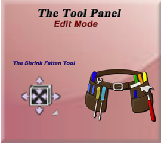
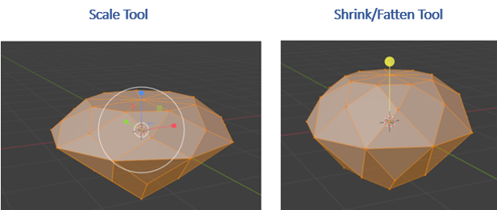
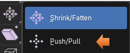
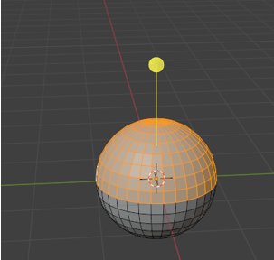
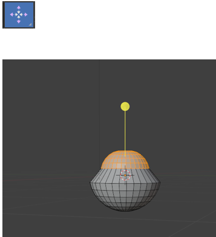

~The Shrink And Fatten Tool~
5/5/2025

The Shrink Fatten Tool
Ok, so maybe your first question is “Why do I need a Shrink/Fatten tool, to begin with? Can’t I just use the scale tool, and have it do the same thing?”
The scale tool will take an entire object and grow and shrink it, but it will not exactly give it a fattened type of an appearance.
Let’s take a Gem shape for instance and look at the differences between these two tools. You can get different types of diamond shapes if you add the extra objects. I added the Gem shape. As you see, Scale will scale the entire object, but fatten will give it an appearance as if it had added some weight to it. Pull backward on that yellow fatten tool stick, and your gem takes on a bit of a weight problem.

The Scale tool is enlarging things based on that center cursor icon, and the Shrink/Fatten tool is using the normals to figure out how it is going to grow or shrink an item. Since the diamond has cut faces sitting at all different angles, it will grow outward based on the direction of each face, giving it a plump look in contrast to just an enlargement of the object.
The Push Pull Tool
This tool is tucked up under the Shrink/Fatten tool.

To demonstrate this tool lets add a UV Sphere, and select the top half in Edit mode.

Now select the Push pull tool, and we can start to reshape the sphere like this. It is just either pushing or pulling based on the direction of the faces, or how Blender likes to term it, its normals.

This was just a short introduction to how you might take and use these tools for yourself. But you can take them and play with them to see how they can help you in modeling some of your objects while in the Blender application.